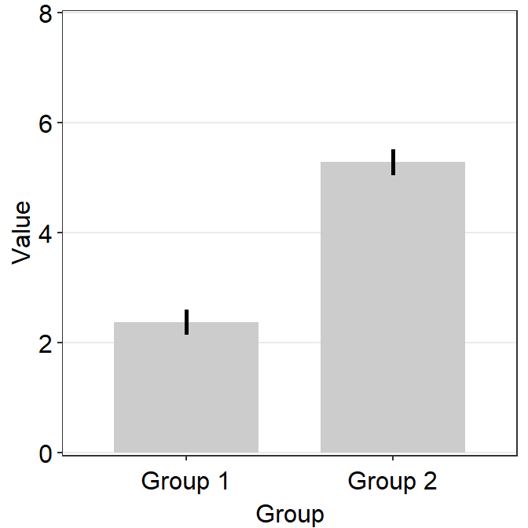

Chapter 5 Recreating the Cover Figure
Load these packages by typing the codes below.
library(tidyverse) # it has ggplot2 package
library(cowplot) # it allows you to save figures in .png file
library(smplot)5.1 Boxplot and violin plot
Upload pre-existing data
- Upload the data using
read_csv(). - Then, convert the Day levels into factor to override the alphabetical order.
df <- read_csv('https://raw.githubusercontent.com/smin95/dataviz/master/data.csv')
df$Day <- factor(df$Day, levels = c('One','Two','Three'))- Plot the boxplot using
sm_boxplot()with your preferred aesthetics. - Then store the figure into a variable.
ggplot(data = df, mapping = aes(x = Day, y = Value, fill = Day)) +
sm_boxplot(color = 'white', shape = 21) +
scale_fill_manual(values = sm_palette(3)) +
ggtitle('sm_boxplot()') +
theme(plot.title = element_text(face="bold")) -> boxplot
print(boxplot)
- Plot the violin plot using
sm_violin()and store it in a variable.
ggplot(data = df, mapping = aes(x = Day, y = Value, color = Day)) +
sm_violin() +
scale_color_manual(values = sm_palette(3)) +
ggtitle('sm_violin()') +
theme(plot.title = element_text(face="bold"))-> violin
print(violin)
5.2 Bar plot and slope chart
- Generate random data.
set.seed(1) # generate random data
day1 = rnorm(20,0,1)
day2 = rnorm(20,5,1)
Subject <- rep(paste0('S',seq(1:20)), 2)
Data <- data.frame(Value = matrix(c(day1,day2),ncol=1))
Day <- rep(c('Day 1', 'Day 2'), each = length(day1))
df1 <- cbind(Subject, Data, Day)- Draw a bar plot using
sm_bar()and store it in a variable.
ggplot(data = df1, mapping = aes(x = Day, y = Value, fill = Day)) +
sm_bar(shape = 21, color = 'white', point_alpha = 1, bar_alpha = 0.2,
bar_fill_color = 'black') +
scale_fill_manual(values = sm_color('blue','orange')) +
theme(axis.title.x = element_blank()) +
ggtitle('sm_bar()') +
theme(plot.title = element_text(face="bold")) -> bar
print(bar)
- Draw a slope chart using
sm_slope()and store it in a variable.
ggplot(data = df1, mapping = aes(x = Day, y = Value,
group = Subject, fill = Day)) +
sm_slope(labels = c('Day 1', 'Day 2'),
shape = 21, color = 'white', line_alpha = 0.3) +
scale_fill_manual(values = sm_color('blue','orange')) +
ggtitle('sm_slope()') +
theme(plot.title = element_text(face="bold")) -> slope
print(slope)
5.3 Raincloud plot
- Generate random data.
set.seed(2) # generate random data
day1 = rnorm(20,0,1)
day2 = rnorm(20,5,1)
day3 = rnorm(20,6,1.5)
day4 = rnorm(20,7,2)
Subject <- rep(paste0('S',seq(1:20)), 4)
Data <- data.frame(Value = matrix(c(day1,day2,day3,day4),ncol=1))
Day <- rep(c('Day 1', 'Day 2', 'Day 3', 'Day 4'), each = length(day1))
df2 <- cbind(Subject, Data, Day)- Draw a raincloud plot using
sm_raincloud()and store it in a variable.
sm_raincloud(data = df2, x = Day, y = Value, group = Subject,
boxplot_alpha = 0.5, color = 'white', shape = 21,
sep_level = 2, line_alpha = 0.2) +
scale_x_continuous(limits = c(0.25,4.75),
labels = c('1', '2', '3', '4'),
breaks = c(1,2,3,4)) +
scale_color_manual(values = rep('transparent',4)) +
scale_fill_manual(values = sm_palette(4)) +
ggtitle('sm_raincloud()') +
xlab('Day') +
theme(plot.title = element_text(face="bold")) -> raincloud
print(raincloud)
5.4 Put all figures together
- First add boxplot, violin plot, bar plot and slope chart together in 2x2 using
plot_grid()from thecowplotpackage.
add_four <- plot_grid(boxplot, violin, bar, slope,
ncol = 2, nrow = 2,
rel_widths = c(1,1,1,1),
scale = 0.95)
print(add_four)
- Then, add the raincloud plot below the combined 2x2 figure (
add_four).
all <- plot_grid(add_four, raincloud, ncol = 1,
nrow = 2, rel_widths = c(1,1),
rel_heights = c(2,1.05))
print(all)
- Now save the figure in a png file in your working directory using
save_plot()from thecowplotpackage.
save_plot("sample.png",
tgd, ncol = 2, nrow = 3, base_asp = .95,
dpi = 600)The codes only with no discussion
df <- read_csv('https://raw.githubusercontent.com/smin95/dataviz/master/data.csv')
df$Day <- factor(df$Day, levels = c('One','Two','Three'))
ggplot(data = df, mapping = aes(x = Day, y = Value, fill = Day)) +
sm_boxplot(color = 'white', shape = 21) +
scale_fill_manual(values = sm_palette(3)) +
ggtitle('Boxplot') +
theme(plot.title = element_text(face="bold")) -> boxplot
ggplot(data = df, mapping = aes(x = Day, y = Value, color = Day)) +
sm_violin() +
scale_color_manual(values = sm_palette(3)) +
ggtitle('Violin plot') +
theme(plot.title = element_text(face="bold"))-> violin
set.seed(1) # generate random data
day1 = rnorm(20,0,1)
day2 = rnorm(20,5,1)
Subject <- rep(paste0('S',seq(1:20)), 2)
Data <- data.frame(Value = matrix(c(day1,day2),ncol=1))
Day <- rep(c('Day 1', 'Day 2'), each = length(day1))
df1 <- cbind(Subject, Data, Day)
ggplot(data = df1, mapping = aes(x = Day, y = Value, fill = Day)) +
sm_bar(shape = 21, color = 'white', point_alpha = 1, bar_alpha = 0.2,
bar_fill_color = 'black') +
scale_fill_manual(values = sm_color('blue','orange')) +
theme(axis.title.x = element_blank()) +
ggtitle('Bar plot') +
theme(plot.title = element_text(face="bold")) -> bar
ggplot(data = df1, mapping = aes(x = Day, y = Value,
group = Subject, fill = Day)) +
sm_slope(labels = c('Day 1', 'Day 2'),
shape = 21, color = 'white', line_alpha = 0.3) +
scale_fill_manual(values = sm_color('blue','orange')) +
ggtitle('Slope chart') +
theme(plot.title = element_text(face="bold")) -> slope
# raincloud plot
set.seed(2) # generate random data
day1 = rnorm(20,0,1)
day2 = rnorm(20,5,1)
day3 = rnorm(20,6,1.5)
day4 = rnorm(20,7,2)
Subject <- rep(paste0('S',seq(1:20)), 4)
Data <- data.frame(Value = matrix(c(day1,day2,day3,day4),ncol=1))
Day <- rep(c('Day 1', 'Day 2', 'Day 3', 'Day 4'), each = length(day1))
df2 <- cbind(Subject, Data, Day)
sm_raincloud(data = df2, x = Day, y = Value, group = Subject,
boxplot_alpha = 0.5, color = 'white', shape = 21,
sep_level = 2, line_alpha = 0.2) +
scale_x_continuous(limits = c(0.25,4.75),
labels = c('1', '2', '3', '4'),
breaks = c(1,2,3,4)) +
scale_color_manual(values = rep('transparent',4)) +
scale_fill_manual(values = sm_palette(4)) +
ggtitle('Raincloud plot') +
xlab('Day') +
theme(plot.title = element_text(face="bold")) -> raincloud
add_four <- plot_grid(boxplot, violin, bar, slope,
ncol =2,
nrow = 2, rel_widths = c(1,1,1,1),
scale = 0.95)
all <- plot_grid(add_four, raincloud, ncol = 1,
nrow = 2, rel_widths = c(1,1),
rel_heights = c(2,1.05))
save_plot("sample.png",
tgd, ncol = 2, nrow = 3, base_asp = .95,
dpi = 600)